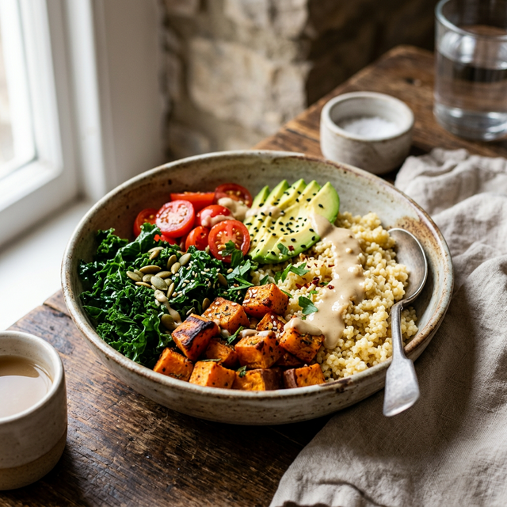
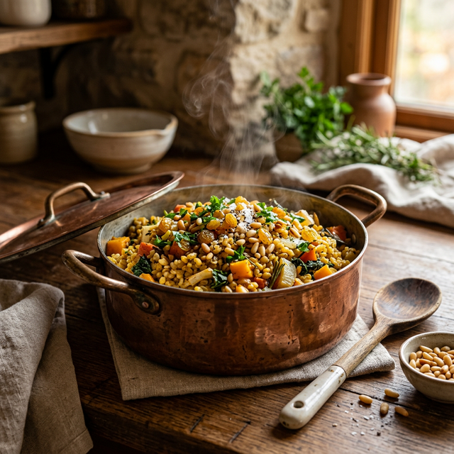
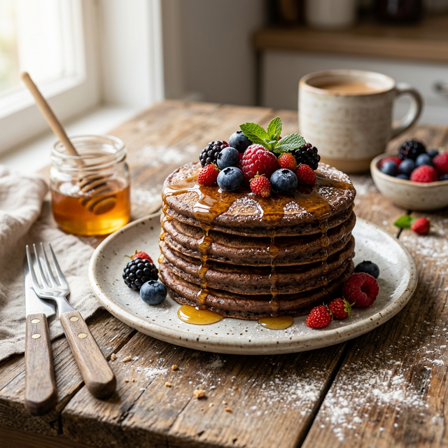
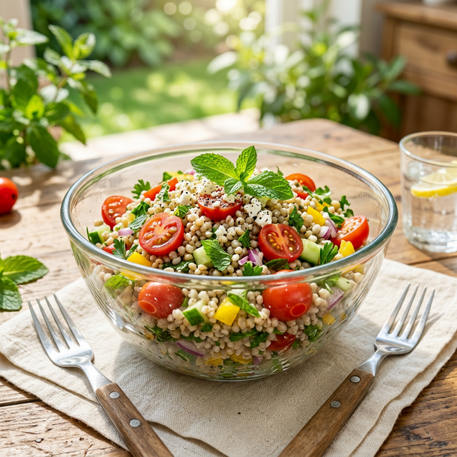

Seasonal Highlights
Curated by our chefs for the current harvest.

Foxtail Millet
Harvest Bowl
A nutrient-packed bowl featuring tender foxtail millet, roasted root vegetables, and a creamy tahini-miso drizzle. Perfect for a sustained energy release.
Pantry Items
- 1 cup Foxtail Millet
- Roasted Sweet Potato
- Tahini & Lemon juice
The Method
- 01. Steam millet until tender
- 02. Toss with earthy spices
- 03. Top with fresh greens

Golden Sorghum
Autumn Pilaf
A hearty pilaf made with whole Jowar kernels, toasted pine nuts, and caramelized onions. A celebration of soil-to-soul cooking.
Main Crops
- 1 cup Whole Sorghum
- Toasted Pine Nuts
- Golden Raisins
The Flow
- 01. Pressure cook Sorghum
- 02. Caramelize large onions
- 03. Fold in nuts and spices

Fluffy Ragi
Power Pancakes
Start your day rooted in ancient energy. These calcium-rich finger millet pancakes are naturally gluten-free and pair perfectly with wild honey.
Pantry Items
- 1 cup Ragi Flour
- Almond Milk
- Wild Forest Honey
The Method
- 01. Whisk dry ingredients
- 02. Fold in almond milk
- 03. Cook until golden brown

Pearl Millet
Summer Salad
A refreshing, protein-packed salad combining cooked Bajra (Pearl Millet) with crisp cucumber, cherry tomatoes, and a zesty mint-lemon dressing.
Main Crops
- Cooked Pearl Millet
- Cherry Tomatoes
- Fresh Mint Leaves
The Flow
- 01. Fluff cooked millet
- 02. Dice fresh vegetables
- 03. Toss with lemon dressing